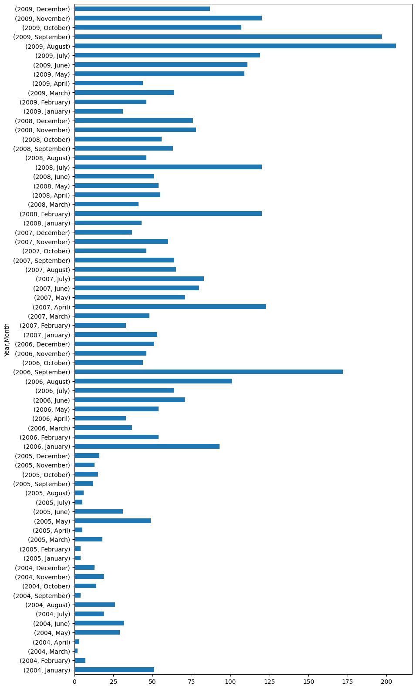
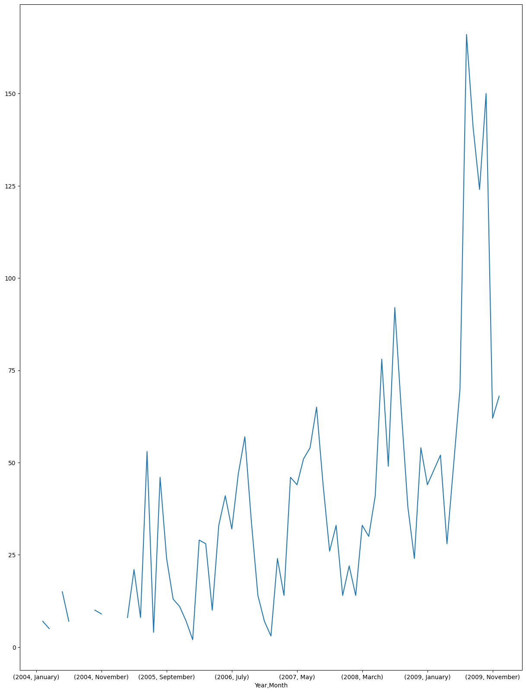

In this page you will find 2 of the graphs we plotted for exscersizes of lab1. The data that is used comes from Wikileaks Afghanistan war logs analysis , regarding causualties caused by the war in Afghanistan.
The figure underneath shows a horizontal bar chart that represents civillian deaths in Afganistan for different months in the period between 2004 and 2009. what we see here is that civillian deaths fluctuate heavily in different periods of time.
The figure underneath shows a line plot of the total deaths of civillian and Afghan forces for different months in the period between 2004 and 2009. What can be seen is that death toll is increasing with each year.
